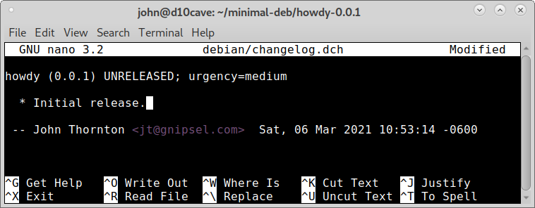

Creating Debian Files¶
The following files are needed in the debian directory.
john@d10cave:~/minimal-deb$ tree
.
└── howdy-0.0.1
├── debian
│ ├── compat
│ ├── control
│ ├── copyright
│ ├── files
│ ├── manpages
│ ├── rules
│ └── source
│ └── format
├── man
└── src
5 directories, 7 files
You can add them with the file manager or with the following commands.
cd howdy-0.0.1/debian
touch control compat copyright files manpages rules source/format
cd ..
changelog¶
Various Debian maintenance tools recognize your email address and name to use by the shell environment variables $DEBEMAIL and $DEBFULLNAME.
You can add them to the ~/.bashrc file with your favorite text editor. The ~ means your home directory.
DEBEMAIL="your.email.address@example.org"
DEBFULLNAME="Firstname Lastname"
export DEBEMAIL DEBFULLNAME
Or in a terminal.
cat >>~/.bashrc <<EOF
DEBEMAIL="email.address@example.org"
DEBFULLNAME="Firstname Lastname"
export DEBEMAIL DEBFULLNAME
EOF
The terminal should be in the howdy-0.0.1 directory to create the changelog file with the following command.
dch --create
Change the changelog file to match the following.
To save the changes press ctrl x then y then enter.
compat¶
The compat file simply contains 11
control¶
The control file has the following as a minimum to satisify lintian.
Source: howdy
Maintainer: John Thornton <jt@gnipsel.com>
Build-Depends: debhelper (>= 8.0.0)
Standards-Version: 3.9.3
Section: utils
Priority: optional
Package: howdy
Priority: optional
Architecture: any
Depends: python3 (>=3.6), ${misc:Depends}
Description: simple helloworld package
Just prints "Howdy", it's very useful.
Note the second and additional lines are
indented with one space.
copyright¶
The copyright file just needs one line to make lintian happy.
Copyright 2021, CnC Machines LLC
rules¶
The rules file contains the following as a minimum. Make sure that is a tab in front of dh $@ and not a space.
#!/usr/bin/make -f
%:
dh $@